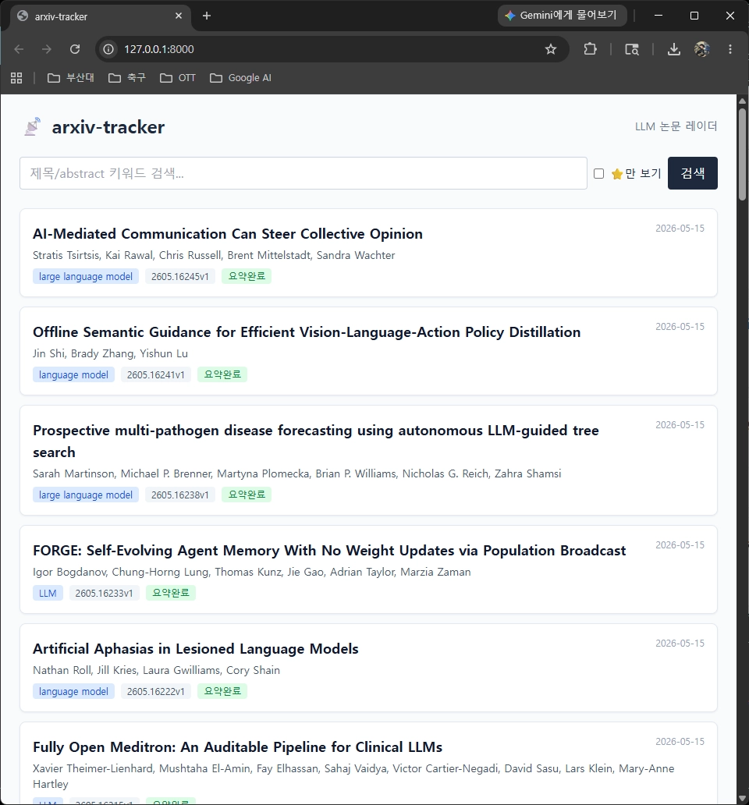
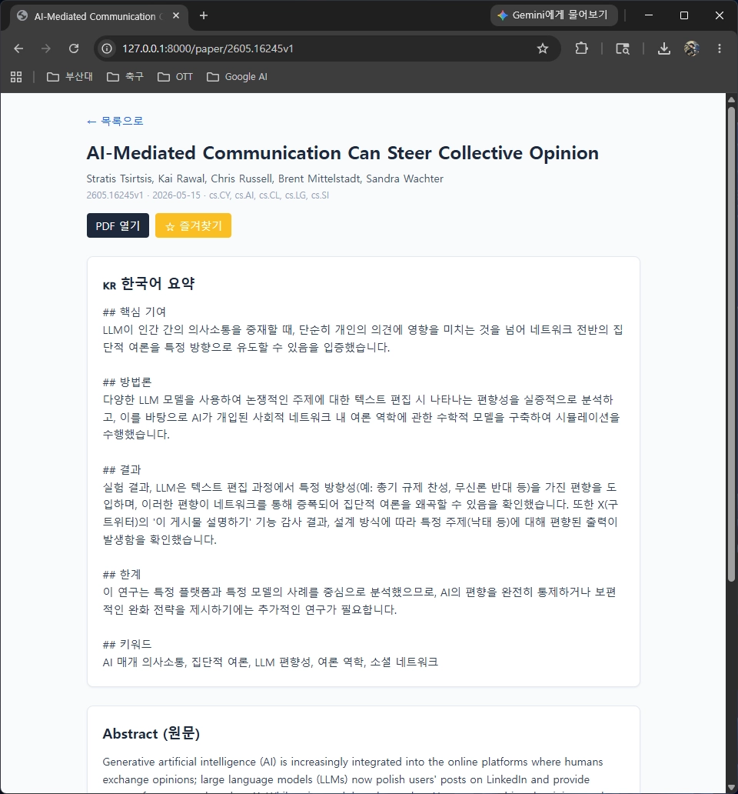
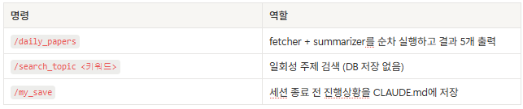
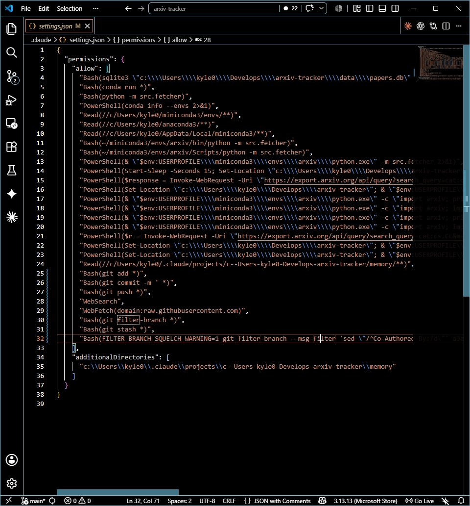
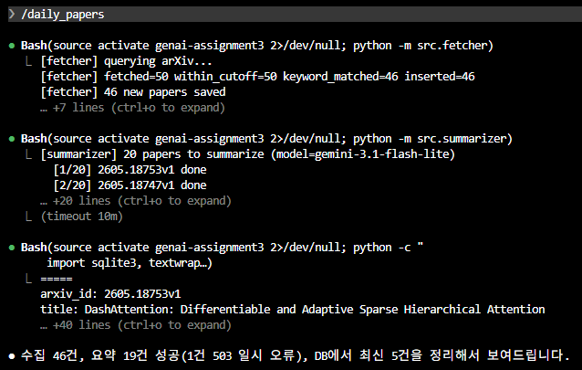
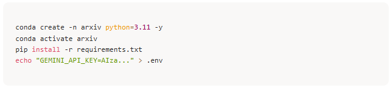
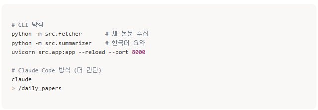

Project Report
arXiv-tracker: LLM 논문 자동 요약 레이더
요약
매일 arXiv에 올라오는 LLM 관련 논문을 키워드로 자동 수집하고, Google Gemini API로 한국어 5섹션 요약을 생성한 뒤 FastAPI 기반 웹 UI에서 검색, 즐겨찾기, 상세 확인까지 할 수 있도록 만든 개인 논문 레이더입니다.
Keywords arXiv, Gemini, FastAPI, Claude Code
1. 프로젝트 소개
LLM, RAG, agent, alignment처럼 빠르게 변하는 주제는 최신 논문을 놓치기 쉽습니다. 이 프로젝트는 관심 키워드와 arXiv 카테고리를 기준으로 최신 논문을 모으고, 초록을 한국어로 구조화해 요약하여 매일 확인 가능한 연구 대시보드로 정리합니다.
1.1 주요 기능
-
자동 수집: arXiv 카테고리
cs.CL,cs.LG,cs.AI와 키워드 기반으로 최신 논문을 가져옵니다. -
한국어 요약:
gemini-3.1-flash-lite로 핵심 기여, 방법론, 결과, 한계, 키워드 5개 섹션을 생성합니다. - 영구 저장: SQLite에 논문 메타데이터와 요약을 저장하고, 검색과 즐겨찾기를 지원합니다.
- 웹 인터페이스: FastAPI와 Tailwind 스타일의 UI로 목록과 상세 페이지를 제공합니다.


1.2 LLM 선택 근거
요약 백엔드로 gemini-3.1-flash-lite를 선택했습니다.
Google AI Studio 무료 할당량이 개인용 데일리 트래킹에 충분하고,
abstract 수준의 짧은 입력에 대한 응답 속도가 빠르며, 한국어
문장 품질도 안정적이기 때문입니다.
모델 설정은 config.yaml의 summary_model
값으로 분리했습니다. 필요하면 Pro 계열 모델로 바꿀 수 있고,
개발 과정에서는 Claude Code를 코드 작성, 리팩토링, 디버깅 도구로
활용해 런타임 LLM과 개발 도구의 역할을 분리했습니다.
2. 사용한 Claude Code 기법
과제 요구사항 중 custom slash command, skills, subagent, hook을 사용했습니다. 반복 작업은 명령으로 줄이고, 요약과 평가처럼 규칙이 필요한 작업은 별도 스킬과 에이전트로 분리했습니다.
2.1 Custom Slash Commands
.claude/commands/에 자주 쓰는 작업을 슬래시 명령으로
만들었습니다. 매번 fetcher와 summarizer를 직접 실행하는 대신
/daily_papers 한 번으로 수집과 요약을 처리합니다.

2.2 Skills: paper-summary
.claude/skills/paper-summary/SKILL.md에 한국어 요약
포맷을 정의했습니다. 논문 abstract를 요약할 때 핵심 기여, 방법론,
결과, 한계, 키워드 순서를 따르게 해서 Gemini에 전달하는
SYSTEM_PROMPT와 Claude Code 내부 요약 형식이 일관되도록
맞췄습니다.
2.3 Subagent: paper-evaluator
.claude/agents/paper-evaluator.md에 정의한 subagent는
관심 적합도, 신규성, 실용성, 임팩트 가능성을 가중 평균해 논문을
1~10점으로 평가합니다. 평가 작업을 메인 세션에서 분리해 context를
아끼는 것이 핵심 장점입니다.
2.4 Hook: PreCompact
/update-config 자연어 명령으로 PreCompact 훅을 설정해,
컨텍스트가 자동 압축되기 전에 진행 상황을 CLAUDE.md에
백업하도록 했습니다. 긴 세션에서도 맥락이 유실되지 않도록 하기
위한 장치입니다.


3. 사용법
3.1 설치
Gemini API 키는 Google AI Studio에서 발급받고, 프로젝트 환경에는
.env로 주입합니다.
conda create -n arxiv python=3.11 -y
conda activate arxiv
pip install -r requirements.txt
echo "GEMINI_API_KEY=AIza..." > .env
3.2 실행
# CLI 방식
python -m src.fetcher # 새 논문 수집
python -m src.summarizer # 한국어 요약
uvicorn src.app:app --reload --port 8000
# Claude Code 방식
claude
> /daily_papers
실행 후 브라우저에서 http://localhost:8000으로 접속합니다.
월요일처럼 주말치 논문까지 포함해야 할 때는
config.yaml의 days_back을 3으로 설정합니다.

4. 배운 점과 한계
-
명령과 스킬의 결합:
/daily_papers처럼 명시적으로 호출하는 명령 안에서 paper-summary 스킬의 암묵적 규칙이 함께 적용되어 반복 작업의 품질이 안정화됐습니다. -
Hook의 낮은 진입장벽: 자연어로 설정할 수 있어
편했지만, 디버깅을 위해서는
.claude/settings.json을 직접 읽고 수정하는 방식도 익혀둘 필요가 있었습니다. - 개발 도구와 런타임 모델의 분리: Gemini는 실제 요약을 담당하고 Claude Code는 Gemini SDK 호출 코드 작성과 디버깅을 맡는 구조가 자연스럽게 작동했습니다.
-
라이브러리 변화 대응:
arxivv4.0.0은 내부적으로requests를 사용하므로arxiv._USER_AGENT를 오버라이드해야 429 차단을 피할 수 있었습니다. 최신 Starlette에서는TemplateResponse호출 방식도request=키워드 인자로 분리됐습니다. - 한계: 현재는 abstract만 요약하므로 깊은 분석에는 제한이 있습니다. 향후 PDF 다운로드 후 본문까지 요약하는 기능을 추가할 예정입니다.